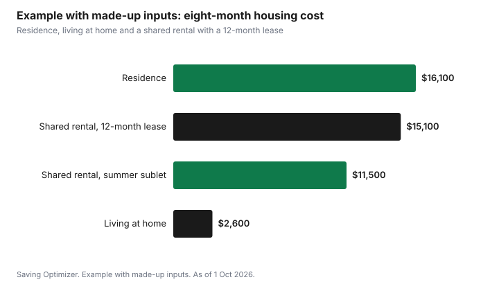

Education · Canada
Residence vs Living at Home vs Renting: Student Housing Costs in Canada
For most Canadian students, living at home is the cheapest option, university residence is the most predictable, and renting off campus falls in between or costs more depending on the city, how many roommates you have and whether you sign a 12-month lease for an eight-month school year, as of 1 October 2026. A double room with a mandatory meal plan costs $16,452 for the 2026-27 year at Queen's University and $16,294 at the University of Waterloo's Village 1, according to their published fees, and that covers rent, food, utilities and internet for about eight months. The right comparison adds up everything for the full school year in each option: rent or fees, food, utilities, internet, transit, furniture, deposits and summer months you may still be paying for.
Key takeaways
- Compare eight months of total cost, not a monthly rent figure.
- Residence fees usually include utilities, internet and furniture, and first-year residence often requires a meal plan.
- Published 2026-27 examples: Queen's double room with meal plan $16,452 (total $17,618.80 with fees and insurance); Waterloo Village 1 double room with meal plan $16,294.
- Off-campus leases are often 12 months; subletting or paying for four empty summer months changes the math.
- Living at home saves rent but adds commuting time and costs; count both.
- Example with made-up inputs: a three-way comparison for one student's first year.
What residence actually costs in 2026-27
Residence prices vary by school, room type and meal plan. Two Ontario examples show the range. At Queen's University in Kingston, the 2026-27 room and meal plan price for a double room is $16,452. Adding the residence society fee, Good-to-Go and Flex dollars and residence insurance brings the total to $17,618.80, with an $805 deposit due by the first-year deadline. At the University of Waterloo, a double room in Village 1 costs $4,127 a term, or $8,254 for eight months, and $16,294 including the mandatory Traditional B meal plan.
| School and room | Housing only | With required meal plan | Notes |
|---|---|---|---|
| Queen's, double room | Not sold separately | $16,452 | Total $17,618.80 with society fee, Flex and insurance |
| Queen's, single room | Not sold separately | $17,629 | Total $18,795.80 with fees and insurance |
| Waterloo Village 1, double room | $8,254 | $16,294 | Meal plan Traditional B, $4,020 a term |
| Waterloo Village 1, single room | $9,200 | $17,240 | Meal plan Traditional B |
| Waterloo UW Place, double room in 2-bedroom suite | $8,668 | Meal plan optional | Suite with kitchen |
These are examples, not averages. Residence in Toronto or Vancouver can cost more, and smaller schools can cost less. Look up your own school's residence fees page and note exactly what is included, because some schools list room and board together and others separately.
What each option includes
| Cost item | Residence | Living at home | Renting off campus |
|---|---|---|---|
| Rent or fees | Fixed price per term | Often $0 or a family contribution | Monthly rent, often 12-month lease |
| Food | Meal plan, often mandatory for first-year dorms | Shared family groceries | Your own groceries |
| Utilities and internet | Included | Usually included | Often extra, split with roommates |
| Furniture | Included | Included | Buy or bring your own |
| Commuting | Walk to campus | Transit or car, can be significant | Depends on distance |
| Summer months | Not charged | No change | Charged if lease is 12 months |
| Deposit | Residence deposit | None | Last month's rent in Ontario; varies by province |
Living at home: cheaper, with hidden costs
Living at home usually removes the largest cost. But commuting has a price in money and time. A monthly transit pass, a student U-Pass included in your fees, or the cost of driving and parking can add hundreds of dollars a month. Long commutes also make it harder to work part-time near campus or join activities. The student commuting costs guide compares transit and driving in detail.
Many families ask a student living at home to contribute something toward groceries or household costs. Agree on an amount early and include it in the comparison. Even with a contribution, living at home is often thousands of dollars cheaper than residence over a school year.
Renting off campus: the lease is the big variable
Off-campus rent depends heavily on the city and the number of roommates. A room in a shared house can cost far less per month than a one-bedroom apartment. But most leases run 12 months, while the school year is eight. Paying four summer months of rent for a room you do not use can cancel out the savings unless you stay for a summer job or find a subtenant. Ask the landlord whether an eight-month lease is available, and read the lease rules on subletting and assignment.
- Rent: your share of the monthly rent, times the months you are committed to.
- Utilities and internet: ask past tenants what they paid; split fairly among roommates. The student internet discounts guide covers plans.
- Tenant insurance: required by many landlords and worth having for your belongings.
- Furniture and kitchen basics: one-time costs in the first year.
- Deposit: in Ontario, a landlord can ask for a rent deposit of no more than one month's rent, used as the last month's rent; damage deposits are not allowed. Other provinces have different rules.
Cooking for yourself can save a lot compared with a meal plan, but only if you actually cook. The shared kitchen grocery strategy shows how to keep a student grocery budget under control.
Tax and benefit differences
Where you live affects some provincial credits. In Ontario, students living in a university residence can claim only $25 as their occupancy cost for the Ontario Energy and Property Tax Credit for the time they lived there, and residence fees cannot be claimed as rent. Students who rent off campus can usually claim the rent they actually paid for provincial rent-related credits where they exist, so keep receipts or bank records. Students who move at least 40 kilometres closer to a school for full-time study can sometimes deduct moving expenses, but only against taxable scholarship, bursary or research income, so most first-year students cannot use it.
Whichever option you choose, file a tax return. Filing records tuition carry-forwards and qualifies you for the Canada Groceries and Essentials Benefit and provincial credits paid with it.
Example with made-up inputs: three ways to do first year
These numbers are an example with made-up inputs. They are not average costs for any city or school. Alex is choosing among residence, living at home with a 70-minute commute, and a shared house near campus.
| Item | Residence | At home | Shared rental |
|---|---|---|---|
| Rent or fees | $9,000 | $0 | $7,200 (8 × $900) |
| Meal plan or groceries | $7,000 | $1,600 (family contribution) | $3,200 |
| Utilities and internet | $0 | $0 | $600 |
| Transit or parking | $0 | $1,000 | $0 |
| Furniture and setup | $100 | $0 | $500 |
| Summer rent (12-month lease) | $0 | $0 | $3,600 (4 × $900) |
| Total | $16,100 | $2,600 | $15,100 |

Living at home is about $13,000 cheaper than residence in this example. The shared rental looks cheaper than residence month by month, but the four months of summer rent bring it close to the residence total. If Alex found a subtenant for the summer, the rental would cost $11,500. That is a 12-month lease decision, not a monthly rent decision.
Questions to ask before you decide
- What does residence include, and is a meal plan mandatory for my building?
- If I rent, is the lease 8 or 12 months, and can I sublet?
- What would my commute from home cost in money and time each week?
- Will I work during the school year, and where?
- How much will my family contribute, and do they expect anything in return?
- What do OSAP or other student aid assume for my living situation?
Student aid also changes with your situation. OSAP and other provincial programs use different living allowances for students who live with their parents and those who live away from home. The first-year university costs guide walks through a full budget, including tuition and books.
| Item | Residence | At home | Renting |
|---|---|---|---|
| Rent or fees | |||
| Food | |||
| Utilities and internet | |||
| Transit or parking | |||
| Furniture and setup | |||
| Summer rent | |||
| Total |
Common mistakes
- Comparing residence's eight-month price with a monthly rent and forgetting the summer.
- Forgetting that residence includes utilities, internet and furniture.
- Ignoring commuting costs and time when living at home.
- Paying a damage deposit in Ontario, where landlords may only collect last month's rent.
- Assuming the meal plan is optional without checking your building.
Sources
- Queen's University, Residence Fees 2026-27 (queensu.ca), as of 1 Oct 2026. Room and meal plan prices, fees, deposit and tax information.
- University of Waterloo, Campus Housing residence fees fall 2026 to spring 2027 (uwaterloo.ca), as of 1 Oct 2026.
- Government of Ontario, Ontario Energy and Property Tax Credit and rent deposit rules under the Residential Tenancies Act (ontario.ca), as of 1 Oct 2026.
- Canada Revenue Agency, moving expenses for students (canada.ca), as of 1 Oct 2026.
- All amounts in the three-way example and chart are made-up inputs.
Frequently asked questions
Is residence cheaper than renting for Canadian students?
It depends on the city, roommates and lease length. Residence includes utilities, internet and furniture and charges only for the school year, while many rentals require 12-month leases. Compare total costs for the full commitment.
How much does university residence cost in Ontario for 2026-27?
Prices vary by school. For example, a double room with the meal plan costs $16,452 at Queen's University and $16,294 at the University of Waterloo's Village 1 for 2026-27, according to their websites as of 1 Oct 2026.
Can I claim residence fees as rent on my taxes?
In Ontario, students in a university residence can claim only a $25 occupancy cost for the Ontario Energy and Property Tax Credit, not the full residence fees. Off-campus rent paid may count for provincial rent-related credits where they exist.
Is living at home always the cheapest option?
Usually, but commuting costs and time can be significant. Add transit or driving costs and any family contribution to compare fairly.
Researched and drafted with AI assistance and fact-checked against official Canadian sources. How we create content.
Disclosure: Saving Optimizer may earn a commission if a partner link is added later, such as a tenant insurance or student internet offer type. No partnership with any university, landlord or provider is claimed on this page, and no provider is ranked. Education only.